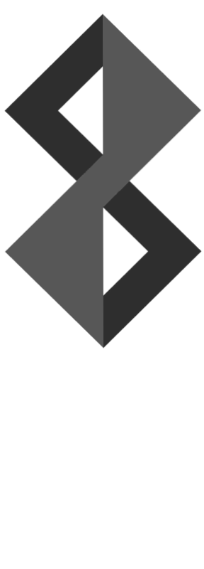

very art content

Vincent Willem van Gogh was a Dutch Post-Impressionist painter who is among the most famous and influential figures in the history of Western art. In just over a decade he created about 2,100 artworks, including around 860 oil paintings, most of them in the last two years of his life. They include landscapes, still lifes, portraits and self-portraits, and are characterised by bold colours and dramatic, impulsive and expressive brushwork that contributed to the foundations of modern art.

Oscar-Claude Monet was a French painter, a founder of French Impressionist painting and the most consistent and prolific practitioner of the movement's philosophy of expressing one's perceptions before nature, especially as applied to plein air landscape painting.The term "Impressionism" is derived from the title of his painting Impression, soleil levant (Impression, Sunrise), which was exhibited in 1874 in the first of the independent exhibitions mounted by Monet and his associates as an alternative to the Salon de Paris.

Frida Kahlo de Rivera was a Mexican artist who painted many portraits, self-portraits and works inspired by the nature and artifacts of Mexico. Inspired by the country's popular culture, she employed a naive folk art style to explore questions of identity, postcolonialism, gender, class and race in Mexican society. Her paintings often had strong autobiographical elements and mixed realism with fantasy. In addition to belonging to the post-revolutionary Mexicayotl movement, which sought to define a Mexican identity, Kahlo has been described as a surrealist or magical realist.
Vincent Willem van Gogh was a Dutch Post-Impressionist painter who is among the most famous and influential figures in the history of Western art. In just over a decade he created about 2,100 artworks, including around 860 oil paintings, most of them in the last two years of his life. They include landscapes, still lifes, portraits and self-portraits, and are characterised by bold colours and dramatic, impulsive and expressive brushwork that contributed to the foundations of modern art.
Oscar-Claude Monet was a French painter, a founder of French Impressionist painting and the most consistent and prolific practitioner of the movement's philosophy of expressing one's perceptions before nature, especially as applied to plein air landscape painting.The term "Impressionism" is derived from the title of his painting Impression, soleil levant (Impression, Sunrise), which was exhibited in 1874 in the first of the independent exhibitions mounted by Monet and his associates as an alternative to the Salon de Paris.
Frida Kahlo de Rivera was a Mexican artist who painted many portraits, self-portraits and works inspired by the nature and artifacts of Mexico. Inspired by the country's popular culture, she employed a naive folk art style to explore questions of identity, postcolonialism, gender, class and race in Mexican society. Her paintings often had strong autobiographical elements and mixed realism with fantasy. In addition to belonging to the post-revolutionary Mexicayotl movement, which sought to define a Mexican identity, Kahlo has been described as a surrealist or magical realist.